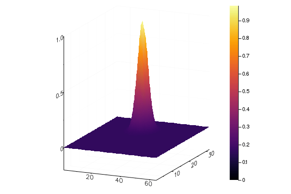

Rotation of a gaussian distribution
\[\frac{df}{dt} + (y \frac{df}{dx} - x \frac{df}{dy}) = 0\]
import Splittings: advection!, UniformMesh
import Splittings: @Magic, CubicSpline
using Plotsfunction with_bsl(tf::Float64, nt::Int)
n1, n2 = 32, 64
mesh1 = UniformMesh(-π, π, n1)
mesh2 = UniformMesh(-π, π, n2)
x = mesh1.points
y = mesh2.points
dt = tf/nt
f = zeros(Float64,(n1,n2))
for (i, xp) in enumerate(x), (j, yp) in enumerate(y)
xn = cos(tf)*xp - sin(tf)*yp
yn = sin(tf)*xp + cos(tf)*yp
f[i,j] = exp(-(xn-1)*(xn-1)/0.2)*exp(-(yn-1)*(yn-1)/0.2)
end
anim = @animate for n=1:nt
@Magic(advection!( f, mesh1, y, dt, CubicSpline(), 1),
advection!( f, mesh2, -x, dt, CubicSpline(), 2)
)
surface(f)
end
endwith_bsl (generic function with 1 method)@time f = with_bsl( 2π, 6)GKS: invalid bitmap size
GKS: invalid bitmap size
GKS: invalid bitmap size
GKS: invalid bitmap size
GKS: invalid bitmap size
GKS: invalid bitmap size
┌ Info: Saved animation to
└ fn = "/Users/travis/build/pnavaro/Splittings.jl/docs/build/examples/rotanim.gif"
5.761303 seconds (5.17 M allocations: 237.515 MiB, 2.76% gc time)
This page was generated using Literate.jl.